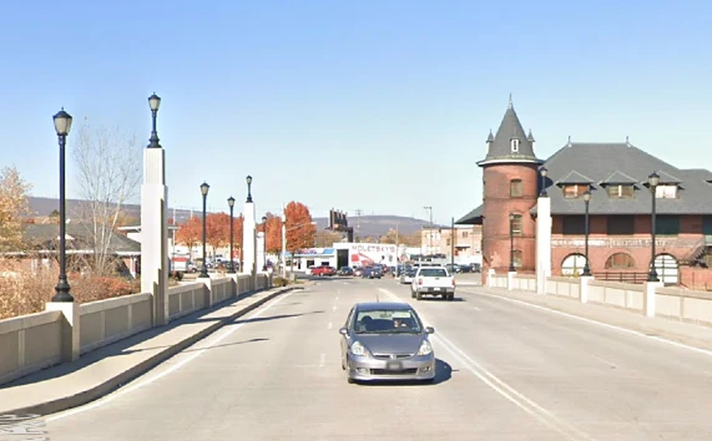
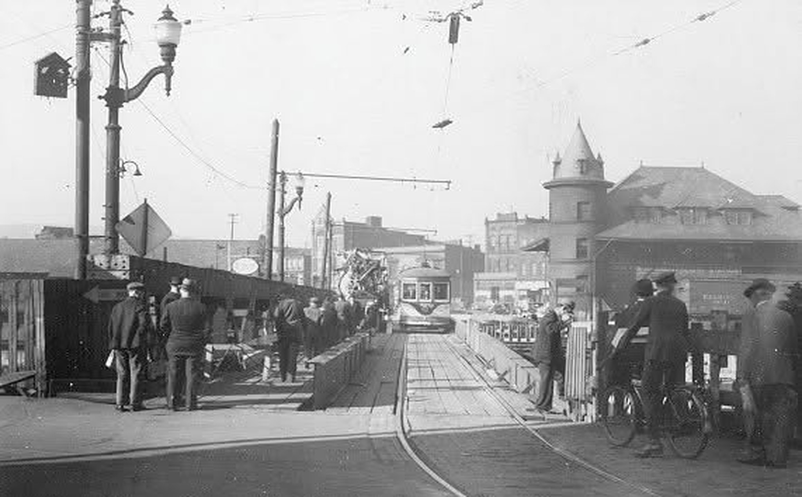

Scranton, Pennsylvania · Then & Now
Lackawanna Avenue
Bridge
Almost nothing about this photograph is recorded — not the day, not the crew standing on the deck, not what they had stopped for. The one thing in the frame that can be dated is the building at the far end: the Central Railroad of New Jersey’s passenger station, built between 1891 and 1893 to a Wilson Brothers design and on the National Register since 1979. It is still there. The bridge under the photographer’s feet is not — the crossing was rebuilt, and the trolley tracks went with it.


Drag to compare · arrow keys to scrub
ThenPhotograph, the Lackawanna Avenue crossing looking toward the Central Railroad of New Jersey station. Undated and unattributed; the station opened in 1893, and the electric cars and the dress put it in the early 1900s. Nothing narrower than that is supported.
NowGoogle Street View, captured November 2020. Imagery © Google.
On the fitThe bridge is not the survivor here. Deck, railings, lamp standards and trolley tracks have all been replaced, and the modern parapets stand roughly where the old girders did. The station is the only structure with edges in both frames, so the pair is scaled and placed on it — the tower, its conical roof, and the roofline of the wing running off to the right. Everything in the foreground is a rebuild on the same alignment, which is the only reason the two halves read as one place.